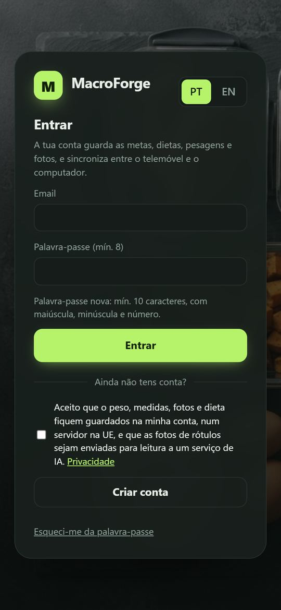
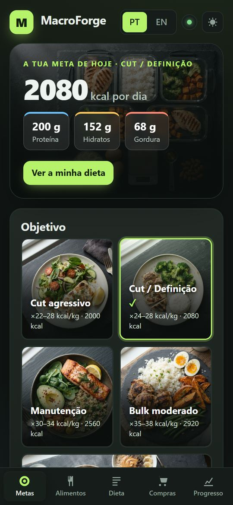
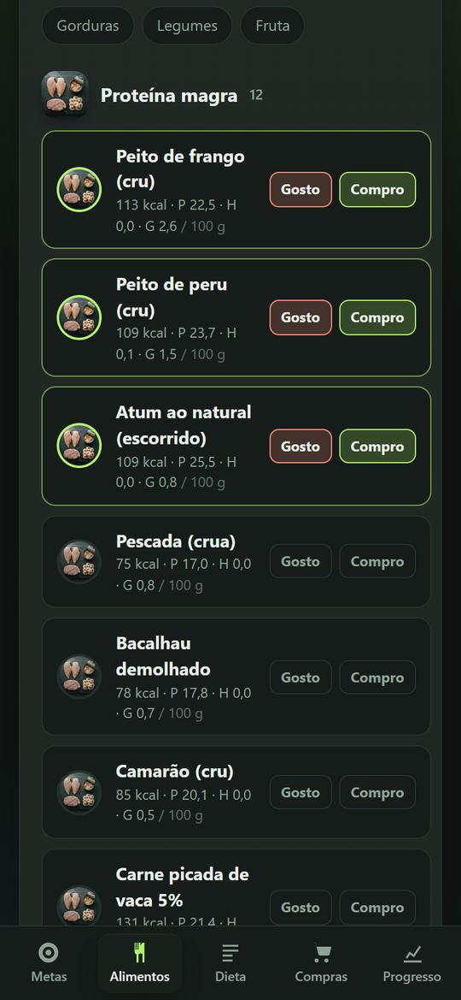
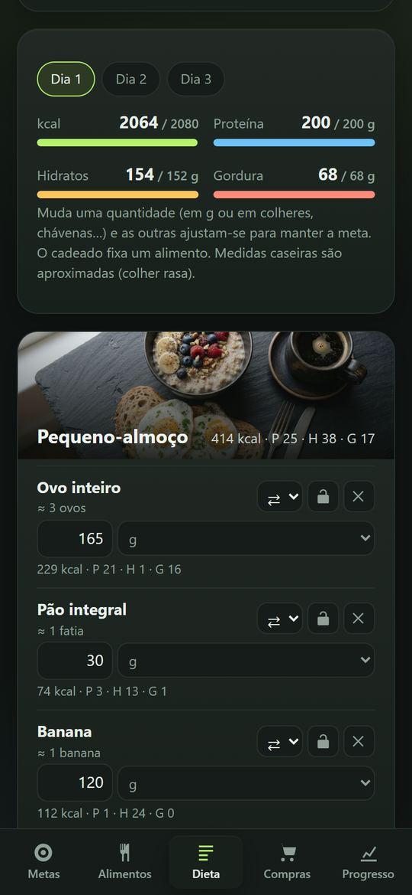
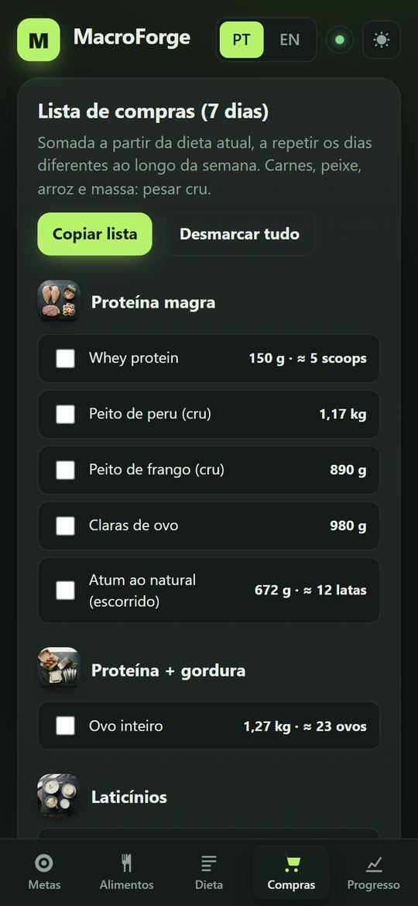
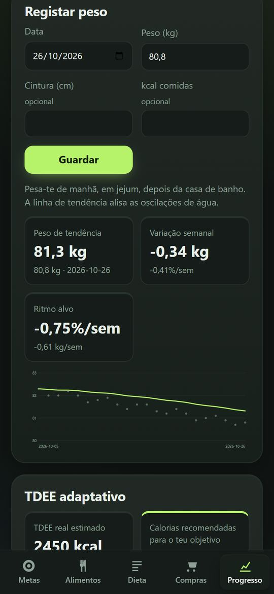

Como usar o MacroForge
Em 5 minutos tens a tua meta de calorias, uma dieta feita com os alimentos de que gostas, a lista de compras e o acompanhamento do peso.
1Instalar no telemóvel
O MacroForge é uma app web: instala-se a partir do browser, sem loja, e fica com ícone no ecrã como qualquer app.
iPhone
- Abre davide897.github.io/macroforge no Safari (tem de ser o Safari).
- Carrega no botão Partilhar (o quadrado com a seta para cima).
- Escolhe Adicionar ao ecrã principal → Adicionar.
Android
- Abre o link no Chrome.
- Menu ⋮ → Instalar app (ou "Adicionar ao ecrã principal").
Computador
No Chrome ou no Edge, carrega no ícone de instalar à direita da barra de endereço.
Depois de aberta uma vez, a app funciona sem internet. Os dados sincronizam quando a ligação voltar.
2Criar conta
- Escreve o teu email e uma palavra-passe (mínimo 10 caracteres, com maiúscula, minúscula e número).
- Marca a caixa do aviso de privacidade e carrega em Criar conta.
- Abre o email de confirmação e carrega no link (vê também no spam).
- Entra na app. A conta fica a aguardar aprovação do administrador; recebes um email quando estiver ativa e carregas em Verificar outra vez.
A conta guarda tudo e sincroniza entre o telemóvel e o computador. Ninguém mais vê os teus dados.

3Definir as tuas metas
No separador Metas:
- Preenche o perfil: sexo, idade, altura e peso.
- Escolhe o objetivo: cut agressivo, cut, manutenção, bulk moderado ou bulk agressivo.
- A app calcula logo as calorias, proteína, hidratos e gordura do dia, com as regras "old school" de culturismo (multiplicadores por kg).
Afinar (opcional)
- Ponto no intervalo: começa no meio; mais para baixo = mais agressivo.
- Podes mudar a proteína e a gordura por kg; os hidratos enchem o resto.
Começa pelo valor do meio e ajusta ao fim de 2 a 3 semanas com o separador Progresso.

4Escolher os alimentos
No separador Alimentos, marca em cada um:
- Gosto: gostas de comer.
- Compro: consegues comprar.
A dieta só usa alimentos com as duas marcas. Com pressa? Carrega em Seleção rápida: básicos.
Falta um alimento?
- Fotografar rótulo: tira uma foto à tabela nutricional (de frente, com boa luz) e a app lê os valores sozinha.
- Ou Adicionar um alimento que falta e escreves os valores por 100 g.
Os alimentos que juntas ficam disponíveis para toda a gente da app (etiqueta "comunidade"). Ninguém vê quem os juntou.

5Gerar a dieta
- No separador Dieta, escolhe quantas refeições por dia (a bolinha marca a recomendada) e quantos dias diferentes queres.
- Carrega em Gerar nova dieta. As barras em cima mostram se o dia bate com a meta.
Pôr a dieta à tua maneira
- Mudar uma quantidade: as outras ajustam-se sozinhas para manter a meta.
- ⇄ Trocar um alimento por outro do mesmo tipo.
- Cadeado: fixa a quantidade de um alimento.
- Escolhe a unidade: gramas, colheres de sopa/chá, chávenas, unidades.
- + Adicionar alimento a uma refeição.
No fundo da página: Sugestões para juntar (alimentos que melhoram a dieta) e O que falta e o que está coberto.

6Lista de compras
O separador Compras soma tudo o que precisas para 7 dias, em kg e em unidades ("≈ 18 latas").
- Vai riscando o que já tens.
- Copiar lista para colar numa nota ou mensagem.
Carnes, peixe, arroz e massa estão sempre em peso cru.

7Acompanhar o progresso
- No separador Progresso, regista o peso (de manhã, em jejum, depois da casa de banho). A cintura e as kcal comidas são opcionais.
- A linha de tendência alisa as oscilações de água. Conta a tendência, não o dia.
- Com 5 pesagens em 10 dias ou mais, o TDEE adaptativo calcula quanto gastas de facto e recomenda as calorias. Carrega em Aplicar à dieta.
- Fotos de progresso: frente, lado e costas. Compara o antes e o depois lado a lado.
Faz o check-in uma vez por semana: se o espelho e a balança discordarem, confia na tendência de 2 a 3 semanas.

Dúvidas
Os meus dados estão seguros?
Ficam na tua conta, num servidor na UE, e só tu lhes acedes. Podes exportar tudo (Progresso → Cópia de segurança) e apagar a conta a qualquer momento (Progresso → Conta → Apagar a minha conta). Ver Privacidade.
Esqueci-me da palavra-passe.
No ecrã de entrada, escreve o email e carrega em "Esqueci-me da palavra-passe". Recebes um link para escolher outra.
Usei a app noutro telemóvel. Os dados aparecem?
Sim: entra com a mesma conta. A app sincroniza sozinha; o ponto verde no topo diz "Sincronizado".
A leitura do rótulo falhou.
Tira a foto de frente, com a tabela inteira e boa luz. Se o serviço estiver ocupado, tenta daqui a pouco ou carrega em "Preencher à mão". Há um limite diário de leituras por pessoa.
Os dias da dieta saem iguais.
Marca mais opções (pelo menos 3 proteínas, 3 hidratos, 2 legumes e 2 frutas). O cartão "Sugestões" diz o que falta.
Partilhar o telemóvel com outra pessoa
Antes de outra pessoa entrar, carrega em Sair (Progresso → Conta). Os teus dados saem do aparelho e ficam guardados na tua conta.
O MacroForge dá estimativas com base em regras de nutrição desportiva. Não é aconselhamento médico. Se tens alguma condição de saúde, estás grávida, és menor ou tens historial de distúrbios alimentares, fala com um médico ou nutricionista antes de seguir uma dieta.
Abrir o MacroForgeHow to use MacroForge
In 5 minutes you have your calorie target, a diet built from foods you like, a shopping list and weight tracking.
1Install on your phone
MacroForge is a web app: you install it from the browser, no store, and it gets an icon on your home screen like any app.
iPhone
- Open davide897.github.io/macroforge in Safari (it must be Safari).
- Tap Share (the square with an up arrow).
- Choose Add to Home Screen → Add.
Android
- Open the link in Chrome.
- Menu ⋮ → Install app (or "Add to Home screen").
Computer
In Chrome or Edge, click the install icon at the right of the address bar.
Once opened, the app works offline. Your data syncs when the connection is back.
2Create an account
- Type your email and a password (at least 10 characters, with upper case, lower case and a number).
- Tick the privacy notice box and tap Create account.
- Open the confirmation email and click the link (check spam too).
- Sign in. The account waits for the administrator's approval; you get an email when it is active, then tap Check again.
Your account keeps everything and syncs between phone and computer. Nobody else sees your data.
3Set your targets
In the Targets tab:
- Fill in your profile: sex, age, height and weight.
- Pick a goal: aggressive cut, cut, maintenance, lean bulk or aggressive bulk.
- The app works out your daily calories, protein, carbs and fat using old-school bodybuilding rules (multipliers per kg).
Fine-tune (optional)
- Point in the range: start in the middle; lower = more aggressive.
- You can change protein and fat per kg; carbs fill the rest.
Start at the midpoint and adjust after 2 to 3 weeks with the Progress tab.
4Pick your foods
In the Foods tab, mark each food:
- Like: you enjoy eating it.
- Can buy: you can get it.
The diet only uses foods with both marks. In a hurry? Tap Quick pick: basics.
Missing a food?
- Photograph label: take a photo of the nutrition table (straight on, good light) and the app reads the values.
- Or Add a missing food and type the values per 100 g.
Foods you add become available to everyone in the app ("community" tag). Nobody sees who added them.
5Generate your diet
- In the Diet tab, choose meals per day (the dot marks the recommended one) and how many different days.
- Tap Generate new diet. The bars at the top show whether the day hits the target.
Make it yours
- Change an amount: the others adjust to keep the target.
- ⇄ Swap a food for another of the same kind.
- Lock: pins a food's amount.
- Pick the unit: grams, tablespoons/teaspoons, cups, units.
- + Add food to a meal.
At the bottom: Suggestions to add (foods that improve the diet) and What is missing and what is covered.
6Shopping list
The Shopping tab adds up everything you need for 7 days, in kg and in units ("≈ 18 cans").
- Tick off what you already have.
- Copy list to paste into a note or message.
Meat, fish, rice and pasta are always raw weight.
7Track your progress
- In the Progress tab, log your weight (morning, fasted, after the bathroom). Waist and kcal eaten are optional.
- The trend line smooths out water swings. The trend counts, not the day.
- With 5 weigh-ins over 10+ days, the adaptive TDEE works out what you really burn and recommends calories. Tap Apply to diet.
- Progress photos: front, side and back. Compare before and after side by side.
Check in once a week: if the mirror and the scale disagree, trust the 2 to 3 week trend.
FAQ
Is my data safe?
It stays in your account on a server in the EU and only you can access it. You can export everything (Progress → Backup) and delete your account any time (Progress → Account → Delete my account). See Privacy.
I forgot my password.
On the sign-in screen, type your email and tap "Forgot my password". You get a link to choose a new one.
I used the app on another phone. Does my data show up?
Yes: sign in with the same account. The app syncs by itself; the green dot at the top says "Synced".
Label reading failed.
Take the photo straight on, with the whole table and good light. If the service is busy, try again shortly or tap "Fill in by hand". There is a daily reading limit per person.
The diet days come out the same.
Mark more options (at least 3 proteins, 3 carbs, 2 vegetables and 2 fruits). The "Suggestions" card tells you what is missing.
Sharing a phone with someone
Before someone else signs in, tap Sign out (Progress → Account). Your data leaves the device and stays saved in your account.
MacroForge gives estimates based on sports nutrition rules. It is not medical advice. If you have a health condition, are pregnant, under 18 or have a history of eating disorders, talk to a doctor or dietitian before following a diet.
Open MacroForge